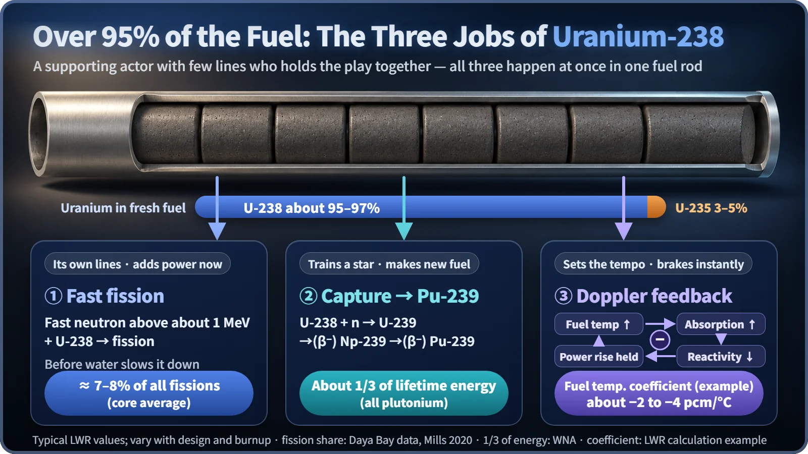
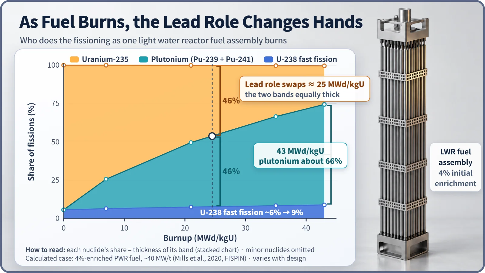

Nuclear Reactions & Fission · 043
The Supporting Actor Who Carries the Show — Why Uranium-238 Is Not Just Waste
It is not the isotope billed as the fuel, yet uranium-238 adds fissions, breeds new fuel and steadies the reactor when the fuel heats up.
Uranium-238 hardly splits with slow neutrons, yet it makes up over 95% of light water reactor fuel and does three jobs at once. It splits directly when hit by fast neutrons, it captures neutrons and turns into plutonium-239, a new fuel, and it absorbs more neutrons when the fuel heats up, braking any rise in power. [1]
The actor who deserves the longest applause
When a play ends and the curtain call begins, most of the applause goes to the leads. But seasoned theatergoers know that without the supporting actor with only a few lines, the one who bridges the scenes and steadies the tempo when a lead falters, the production would quickly fall apart.
Nuclear fuel has a supporting actor like that: uranium-238. In the fuel for a light water reactor (the common kind of plant that uses ordinary water as both coolant and moderator), the isotope billed as the real "fuel" is uranium-235, at only about 3–5%. The remaining 95% or more is uranium-238. In natural uranium, uranium-238 accounts for 99.3%.
Is this overwhelming majority just filler? Not at all. It handles three jobs on stage at the same time.

Job one: few lines, but real ones — fast fission
You'll often hear that uranium-238 can't undergo fission. That's only half true. Uranium-235 is fissile: it splits readily even when hit by slow thermal neutrons. Uranium-238 is fissionable: it splits only when it meets a fast neutron with more than about 1 MeV of energy.
Neutrons freshly born in fission average about 2 MeV, which is pretty fast. In the brief instant before water slows them down, some of them split a nearby uranium-238 nucleus. Across a whole light water reactor core, about 7–8% of all fissions happen this way. It's a small share, but it's added steadily for as long as the fuel burns, and it even grows a little over time. [2]
Job two: training an understudy into a star — plutonium-239
Sometimes uranium-238 doesn't split when it meets a neutron but simply swallows it (capture). It becomes uranium-239, and after two beta decays, within a few days, it turns into plutonium-239.
Plutonium-239, like uranium-235, splits readily with thermal neutrons. So new fuel is constantly being made inside the reactor and burned right where it forms, and the star of the power output gradually changes. At first uranium-235 does nearly all the work, but as burnup proceeds, plutonium's share grows. According to the World Nuclear Association, about one-third of a light water reactor's thermal output comes from plutonium fission, and in heavily burned fuel that share can exceed half. A calculation for 4%-enriched light water reactor fuel found that plutonium overtook uranium-235 at a burnup of about 25 MWd/kgU. [3] [4]

Burnup measures how much heat energy a kilogram of fuel has produced so far, in MWd/kgU (megawatt-days per kilogram of uranium). Think of it as the fuel's odometer. By the second half of the run, the understudy is taking the stage as a lead.
Job three: slowing the tempo when the stage overheats — the Doppler effect
Uranium-238 is unusually good at absorbing neutrons in certain narrow energy bands (resonance absorption). When the fuel heats up, its nuclei jiggle more vigorously, the energy window where absorption happens easily spreads wider, and uranium-238 actually catches more neutrons. This is the Doppler effect.
Follow the chain: power rises → the fuel gets hotter → uranium-238 eats more neutrons → fewer neutrons are left for fission → the power is held back from rising further. The reactor steps on its own brake, a negative feedback. As a light water reactor's fuel temperature coefficient of reactivity, its size is roughly −2 to −4 pcm per °C (pcm is a reactivity change of one part in 100,000; the value depends on the core design and burnup). It sounds small, but fuel temperatures swing by hundreds of degrees, and it acts the very moment the fuel heats up. With uranium-238 making up 95% or more of the fuel, this brake is a sturdy one. [5]
Clearing up a worry: isn't that much of it dangerous?
"If the fuel is full of uranium that doesn't even split, doesn't that make the reactor unstable?" It's closer to the opposite: when the power tries to climb, uranium-238 is the first to push back. And the idea that all the electricity from a light water reactor comes from uranium-235 isn't accurate either. Over the fuel's whole life, plutonium born from uranium-238 handles a substantial share.
Potential left even in spent fuel
A light water reactor extracts less than 1% of the energy that uranium holds, and spent fuel is still mostly uranium-238. The International Atomic Energy Agency judges that fast reactors, which skip the moderator and use fast neutrons to convert uranium-238 into plutonium more aggressively, have the potential to get about 60 times more energy from the same uranium. Some countries also recover uranium and plutonium from spent fuel and reuse them as mixed-oxide (MOX) fuel. Countries weigh economics, nonproliferation and waste management differently, so their policy choices differ. [6]
Key takeaways
Uranium-238 splits directly with fast neutrons, adding about 7–8% of fissions; captures neutrons and breeds plutonium-239, which ends up supplying about one-third of the output; and catches more neutrons when the fuel heats up, keeping the power from soaring. Next time you hear "4% enrichment," remember that the other 96% isn't sitting idle.